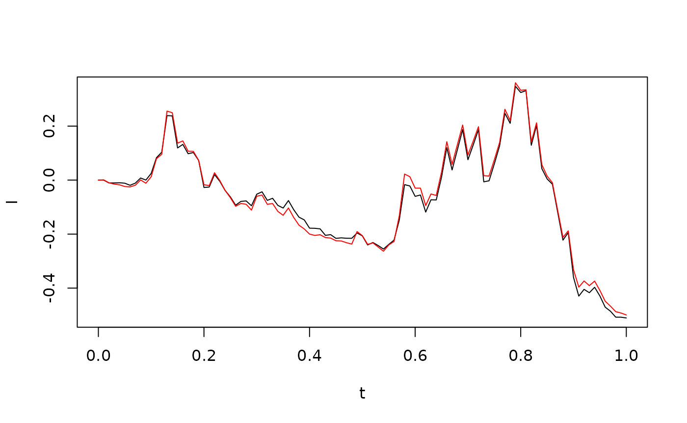

Itô Integrals and the Euler-Maruyama method
Uffe Høgsbro Thygesen
2023-03-16
Source:vignettes/ItoIntegrals.Rmd
ItoIntegrals.RmdNumerical Itô integration
We consider an integrator \(\{B_t\}\) and an integrand \(\{G_t\}\), which are both stochastic processes. Think of \(\{B_t\}\) as Brownian motion and \(\{G_t\}\) as an adapted process, although this is not necessary. We aim to approximate the Itô integral \[ I_t = \int_0^t G_s ~dB_s \] numerically, for different values of \(t\).
Given a time discretization \(0=t_0 < t_1 < \cdots < t_n\), the numerical Itô integral is given by \[ I_0 = 0, \quad I_{t_i+1} = I_{t_{i}} + G_{t_i} (B_{t_{i+1}}- B_{t_i}) \mbox{ for } i = 0,1,\ldots,n-1. \] This assumes that \(\{G_t\}\) is piecewise constant between the time points \(t_i\).
This approximation is implemented in the function itointegral. For example, we can integrate Brownian motion w.r.t. itself:
## Loading required package: SDEtools
t <- seq(0,1,0.01)
B <- rBM(t)
I <- itointegral(B,B)
plot(t,I,type="l")
lines(t,0.5*(B^2-t),col="red")
We have included the analytical result. The agreement is not perfect; there is a time discretization error.
Note that the numerical Itô integration routine does not need to know the time grid; only values of the integrator and the integrand at each time point. The integral is implemented as follows:
print(itointegral)## function (G, B)
## {
## return(c(0, cumsum(G[-length(G)] * diff(B))))
## }
## <bytecode: 0x55e8e1cef210>
## <environment: namespace:SDEtools>Itô integrals and the Euler-Maruyama method
Note that the numerical Itô integral is essentially an Euler-Maruyama solution of the stochastic differential equation:
\[ dI_t = G_t ~dB_t \]
We see that there is a strong coupling between the Euler-Maruyama method and numerical Itô integration. To verify this, consider the Itô stochastic differential equation
\[ dX_t = f(X_t) ~dt + g(X_t) ~dB_t \]
with initial condition \(X_0=0\), where \(f(x)=x-x^3\) and \(g(x) = \sqrt{1+x^2}\):
f <- function(x) x -x^3
g <- function(x) sqrt(1 + x^2)
X <- SDEtools::euler(f,g,t,0,B=B)$X
plot(t,X,type="l")
For this solution, we have \[ X_t = \int_0^t f(X_s) ~ds + \int_0^t g(X_s) ~dB_s . \]
The following code compares the Euler-Maruyama discretization of the stochastic differential equation with the numerical Itô integral:
plot(t,X,type="l")
lines(t,itointegral(f(X),t)+itointegral(g(X),B),col="red")Note that they seem to fit perfectly. In fact, the error is roughly machine precision:
print(max(abs(X-itointegral(f(X),t)-itointegral(g(X),B))))## [1] 6.661338e-16that is, there is no time discretization error because we use the same principle for time discretization in the Euler-Maruyama method and in the numerical Itô integral.
Numerical Itô integration w.r.t. other processes
We can perform numerical Itô integration of any process with respect to any process, even if the nice properties of the Itô integral (the martingale property and the Itô isometry) need not hold.
In the following, we demonstrate this by recomputing the Brownian motion:
\[ dB_t = \frac{1}{g(X_t)} ~ dX_t - \frac{f(X_t)}{g(X_t)} ~dt \]
W <- itointegral(1/g(X),X) - itointegral(f(X)/g(X),t)
plot(t,W,type="l")
lines(t,B,col="red")
Again, the error is machine precision so there is no time discretization error:
## [1] 6.661338e-16Numerical Stratonovich integration
We can repeat the previous with Stratonovich integrals such as \[ \int_0^t G_s \circ dB_s \] For example, we can integrate Brownian motion with respect to itself:

Again, we see a reasonable agreement between the numerical and analytical result, even if it is not perfect, due to the time discretization.
The difference between the Itô and the Stratonovich integral comes from the quadratic cross-variation between the integrator and the integrand. The following code and figure compare the Itô and Stratonovich integrals \[ I^i_t = \int_0^t G_s ~dX_s , I^s_t = \int_0^t G_s \ring dX_s \] with \(G_s = B_s + X_s\), as well as the relationship between the two \[ I^s_t = I^i_t + \frac 12 \langle G,X\rangle_t . \]
G <- X+B
Ii <- itointegral(G,X)
Is <- stochint(G,X,rule="c")
plot(t,Ii,type="l")
lines(t,Is,col="red")
points(t,Ii + 0.5 * CrossVariation(G,X))